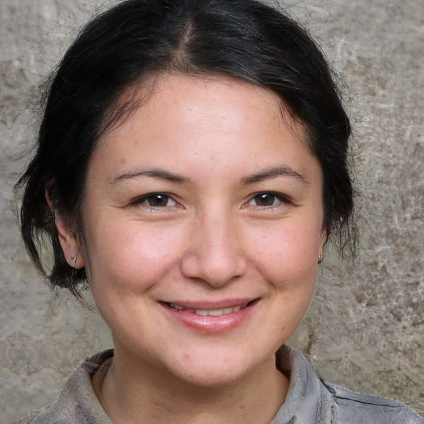
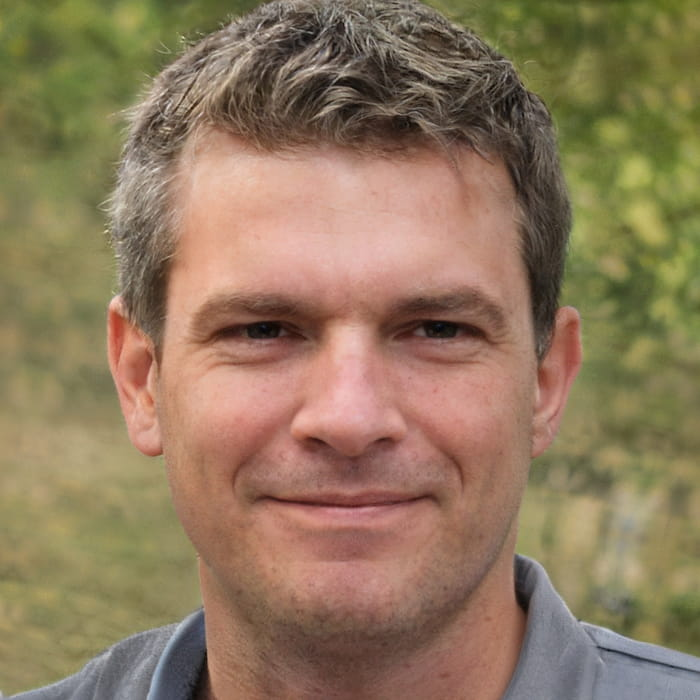
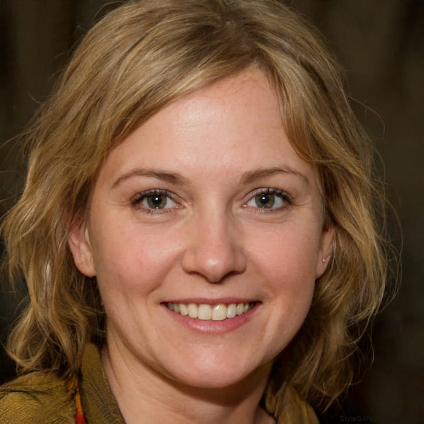

Meet Our Friendly Team

Claire Jack
Position: Centre Manager
Responsible for: The overall running of the centre and all activities.
Favourite Activity: Pole Climb
Experience: 6 years
Speciality: Outdoor Safety
Fun fact: Has climbed Ben Nevis twice
"Adventure starts outside your comfort zone."

Robbie Elliot
Position: Senior Instructor (Land)
Responsible for: Overseeing all land-based activities.
Favourite Activity: Hillwalking
Experience: 7 years
Speciality: Hillwalking and Survival Skills
Fun fact: Has completed over 500 mountain hikes
"Every trail leads to a new adventure."

Marion Hunter
Position: Centre Administrator
Responsible for: Making bookings and arranging activity slots.
Favourite Activity: Helping visitors have a great experience.
Experience: 4 years
Speciality: Organisation and Visitor Support
Fun fact: Loves planning outdoor events
"Great experiences begin with great planning."
What Visitors Say About Our Team
"Thank you to everyone at Lochquarry for making our visit amazing. We had a fantastic time!" - Anonymous Visitor Review
"Claire made everyone feel welcome and organised the activities really well." - Emma
"Robbie was very friendly and explained everything clearly during hillwalking." - Daniel
"Marion helped us arrange our activities quickly and was really helpful." - Sarah
"The whole team made the experience enjoyable and fun from start to finish!" - James